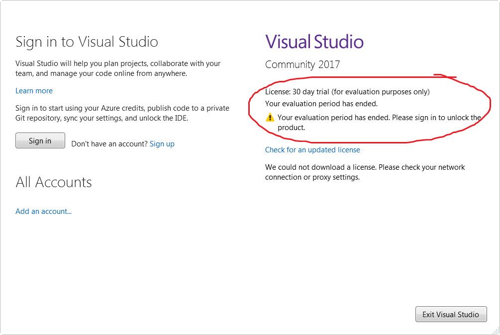

Is Visual Studio Community a 30 day trial?
I installed the supposedly free VS Community 2017 on my PC and 30 days later I get this message from VS saying that my license has expired.
License? Expired? I thought the community edition was "free forever" therefore sporting the "community" tag. What's going on? I tried signing in with my outlook.com account but it says "something went wrong" and comes back to the same screen.
How do I get a fully free version of VS 2017 so I can work on my FOSS projects?

Answer
Sign in and the 30 day trial will go away!
"And if you're already signed in, sign out then sign in again." –b1nary.atr0phy
Suggest
To bypass "30days left must go online to sign-in", sign-in once to Microsoft account, you'll get %LocalAppData%\Microsoft\VSCommon\OnlineLicensing folder that you can copy to offline PCs.